МИНИСТЕРСТВО МОНТАЖНЫХ И СПЕЦИАЛЬНЫХ СТРОИТЕЛЬНЫХ РАБОТ СССР
|
СОГЛАСОВАНО |
УТВЕРЖДАЮ |
|
Заместитель председателя ___________ Д.А. Паньковский письмо № ДП-271-1 от 18.01.85 г. |
Заместитель министра ___________ Г.В. Миловидов 26 марта 1985 г. |
|
Заместитель начальника ГУПО ___________ И.Ф. Кимстач письмо № 7/6/2319 от 06.84 г. |
|
|
Заместитель Главного государст- ___________ В.Е. Ковшило письмо № 122-5/3-4 от 26.04.84 г. |
ТЕПЛОВАЯ ИЗОЛЯИЯ
ТРУБОПРОВОДОВ
И ОБОРУДОВАНИЯ ЗАЛИВОЧНЫМ
ПЕНОПОЛИУРЕТАНОМ
ВСН 462-85
Минмонтажспецстрой СССР
Москва 1986
Ведомственные строительные нормы разработаны Всесоюзным научно-исследовательским и проектным институтом Теплопроект при участии Всесоюзного научно-исследовательского института синтетических смол на основании теоретических и экспериментальных исследований, а также опыта промышленного внедрения тепловой изоляции, выполняемой заливкой композиции пенополиуретана под смонтированное защитное покрытие. В инструкции приведены конструктивные решения тепловой изоляции из заливочного пенополиуретана, технология его изготовления и нанесения на изолируемые поверхности трубопроводов и оборудования в условиях монтажа.
В разработке принимали участие: канд. техн. наук В.И. Калинин, канд. техн. наук И.Л. Майзель, канд. техн. наук А.С. Панин, Т.Н. Грехова, З.А. Егорова, В.В. Попова, А.И. Лисенкова (ВНИПИ Теплопроект), канд. техн. наук Ю.Л. Есипов, З.Н. Храмова (ВНИИСС), В.В. Растяпин (трест Стройтермоизоляция).
|
Министерство монтажных и специальных строительных работ СССР (Минмонтажспецстрой СССР) |
Ведомственные
строительные Тепловая изоляция трубопроводов и оборудования заливочным пенополиуретаном |
ВСН 462-85 |
|
Минмонтажспецстрой СССР |
||
|
Вводится впервые |
Настоящая инструкция устанавливает основные требования, которые необходимо соблюдать при изготовлении тепловой изоляции из заливочных пенопластов в условиях монтажа.
1.1. Инструкция предназначена для руководства при изготовлении тепловой изоляции оборудования и трубопроводов способом заливки пенополиуретана под защитное покрытие.
1.2. Нормы регламентируют основные требования к теплоизоляционным конструкциям, изготовлению и монтажу защитного покрытия и нанесению пенополиуретана способом заливки.
|
Внесены Всесоюзным научно исследовательским и проектным институтом Теплопроект |
Утверждены
Минмонтажспецстроем СССР |
Срок введения |
1.3. При изоляции оборудования и трубопроводов в условиях монтажа в качестве заливочного пенопласта следует использовать жесткий пенополиуретан марки ППУ-331, марки ППУ-331, получаемый на основе компонента А2-331М по ТУ 6-05-221-800-85, разработанного Всесоюзным научно-исследовательским институтом синтетических смол.
1.4. Жесткий заливочный пенополиуретан марки ППУ-331 предназначен для изоляции оборудования и трубопроводов надземной прокладки с рабочими температурами изолируемой поверхности от -180 до +100 °С и расположенных в любых климатических зонах.
1.5. Нормы регламентируют изготовление тепловой изоляции из заливочного пенополиуретана в условиях монтажа при температуре окружающей среды от +30 до 0 °С.
1.6. Область применения инструкции должна соответствовать требованиям СН 542-81 и СН 527-80.
2.1. Конструкция низкотемпературной тепловой изоляции трубопроводов и оборудования, наносимой способом заливки пенополиуретанов под защитное покрытие в условиях монтажа, состоит из следующих элементов:
основного теплоизоляционного слоя из пенополиуретана;
защитного покрытия из металлических листов;
армирующих крепежных деталей из дистанционных кольцевых опор, уплотнителей швов защитного покрытия (герметиков), самонарезающих винтов или комбинированных заклепок.
2.2. Толщина теплоизоляционного слоя из пенополиуретана ППУ-331, заливаемого под защитное покрытие, должна быть не менее 30 и не более 250 мм.
2.3. Для изготовления защитного покрытия следует применять готовые элементы из оцинкованных листов, толщина которых должна составлять:
при диаметре трубопровода до 325 мм и толщине слоя из пенополиуретана до 125 мм - 0,5 мм;
при диаметре трубопроводов и оборудования 325-1500 мм или толщине изоляции свыше 120 мм - 0,7-0,8 мм;
при диаметре изолируемого оборудования свыше 1500 мм - 1,0 мм.
2.4. Элементы защитного покрытия должны укладываться на стыках внахлест не менее чем на 40 мм.
2.5. Закрепление элементов защитного покрытия трубопроводов диаметром менее 600 мм следует производить по продольному шву самонарезающими винтами или алюминиевыми комбинированными заклепками с шагом около 100 мм. При диаметре трубопроводов более 600 мм и на аппаратах закрепление производится по продольному и поперечному швам.
2.6. Поперечный и продольный стыки защитного покрытия необходимо герметизировать. Наложение герметика должно производиться на кромки элементов защитного покрытия перед их установкой на дистанционных опорах. Для устранения дефектов герметизации при установке защитного покрытия допускается нанесение герметика с наружной стороны установленного покрытия.
2.7. Дистанционные опоры (рекомендуемое приложение 1) как правило должны состоять из металлической ленты шириной 30 мм, вырезаемой из оцинкованной стали толщиной 1,5 мм, и деревянных стоек площадью сечения 15´15 мм, закрепляемых на металлической ленте специальными держателями. Допускается закрепление на металлической ленте деревянных стоек сечением до 20´40 мм с помощью 1-2 гвоздей марок: П 1,6´25; П 1,8´32 (ГОСТ 4034-63).
2.8. Держатели деревянных стоек на металлической ленте должны состоять из обоймы и скобы (см. рекомендуемое приложение 1). Обойма держателей изготавливается из оцинкованной стали толщиной 0,5 мм, а скоба - из стали толщиной 0,35 мм.
2.9. Длина деревянных стоек должна быть равна толщине теплоизоляционного слоя за вычетом толщины ленты, а длина металлической ленты на 50-100 мм больше длины наружной окружности поверхности теплоизоляционного слоя.
2.10. Расстояние между закрепленными на ленте держателями со стойками должно составлять:
при диаметре трубопроводов до 325 мм - 150±50 мм;
при диаметре трубопроводов от 325 до 820 мм - 250±50 мм;
при диаметре трубопроводов и оборудования свыше 820 мм - 350±50 мм.
2.11. Установка дистанционных опор на изолируемой поверхности, подлежащей изоляции, должна производиться таким образом, чтобы расстояние между ними по длине объекта было на 80-100 мм меньше ширины развертки элементов защитного покрытия, но не более 1400 мм.
2.12. В смонтированном защитном покрытии должны быть просверлены отверстия диаметром 17 мм для заливки пенополиуретана и отверстия диаметром 2,8-3,2 мм для контроля полноты заполнения изолируемого пространства вспениваемым пенопластом и для выхода воздуха и газов при вспенивании.
2.13. Расстояние между отверстиями для заливки на трубопроводах должно составлять от 1000 до 1500 мм, а между контрольными отверстиями - 400-500 мм. При изоляции оборудования расстояние между заливочными отверстиями должно составлять около 1000 мм.
2.14. В рекомендуемых приложениях приведены принципиальные схемы конструкции тепловой изоляции:
|
прямолинейных участков трубопроводов |
- приложение 2; |
|
фланцевых соединений трубопроводов |
- приложение 3; |
|
отводов трубопроводов |
- приложение 4; |
|
мест врезок и арматуры |
- приложение 5; |
|
цилиндрических частей оборудования и аппаратов |
- приложение 6; |
|
сферических частей оборудования и аппаратов |
- приложение 7. |
Материалы для монтажа защитного покрытия
3.1. Для изготовления заготовок элементов защитного покрытия используется сталь оцинкованная в листах мерных размеров толщиной 0,5-1,0 мм по ГОСТ 7117-78 или сталь оцинкованная холоднокатанная с непрерывных линий толщиной 0,5-1,0 мм по ГОСТ 14918-80.
3.2. Металлические ленты дистанционных опор следует изготавливать из стали оцинкованной холоднокатанной с непрерывных линий по ГОСТ 14918-80 толщиной 1,5 мм.
3.3. Деревянные стойки дистанционных опор (по п.п. 2.7 и 2.9 данной инструкции) следует изготавливать из древесины хвойных (ГОСТ 8486-66) или лиственных (ГОСТ 2695-71) пород - березы, бука, дуба, сосны, ели. Перед сборкой дистанционные опоры должны быть предварительно обработаны антипиреном.
3.4. В качестве герметизирующих материалов следует использовать нетвердеющие трудногорючие герметизирующие мастики марок "Гэлан" (ТУ 21-29-44-76), "НТМС" (ТУ 21-29-79-79), "Шагелен" (ТУ 21-29-84-80), "Тегерон" (ТУ 21-29-87-80), а также нетвердеющую ленту "Герлен" (ТУ 400-1-165-79).
3.5. Закрепление элементов защитного покрытия должно производиться самонарезающими винтами для металла по ГОСТ 10621-80 или алюминиевыми комбинированными заклепками по ГОСТ 12639-80.
ПЕНОПОЛИУРЕТАН И ЕГО СЫРЬЕВЫЕ КОМПОНЕНТЫ
3.6. Основные физико-механические показатели пенополиуретана марки ППУ-331 должны соответствовать показателям, приведенным в табл. 1.
Таблица 1
|
Показатель |
Норма |
Методы испытаний |
|
Кажущаяся плотность, кг/м3 |
40-50 |
ГОСТ 409-77 |
|
Напряжение при 10 %-ной деформации сжатия, МПа, не менее |
0,15 |
ГОСТ 22695-77 |
|
Разрушающее напряжение при изгибе, МПа, не менее |
0,2 |
ГОСТ 18564-83 |
|
Водопоглощение за 24 ч, % по объему, не более |
3,0 |
ГОСТ 20869-75 |
|
Теплопроводность* при
средней температуре 20±5 °С, |
0,029 |
|
|
* Расчетная теплопроводность в конструкции принимается согласно "Инструкции по проектированию тепловой изоляции оборудования и трубопроводов промышленных предприятий" СН 542-81. |
||
3.7. Для изготовления пенополиуретана ППУ-331 следует применять рецептуру, приведенную в табл. 2.
Таблица 2
|
Наименование компонента |
Количество, мас. ч. |
Нормативная документация |
|
Компонент А |
||
|
Компонент А2-331М |
78 |
ТУ 6-05-221-800-85 |
|
Диметилэтаноламин |
0,1 - 0,8 |
ТУ 6-02-1086-77 |
|
Хладон-11 |
15 - 21,5 |
ТУ 6-02-727-78 |
|
Компонент Б |
||
|
Полиизоцианат |
103 - 116 |
ТУ 6-03-375-75 |
3.8. Поставка сырья для производства пенополиуретана ППУ-331 должна осуществляться в виде четырех компонентов, указанных в табл. 2. Допускается поставка компонента А2-331М в виде отдельных составляющих с последующим приготовлением его на строительной площадке.
3.9. Характеристика и основные свойства компонентов ППУ-331, а также составляющих компонента А2-331М приведены в справочном приложении 8.
3.10. Все поступающие материалы должны иметь технические паспорта предприятий-изготовителей. Применение материалов, не имеющих технических паспортов, запрещается. Тара и упаковка компонентов должны соответствовать нормативной документации на каждый вид сырья.
3.11. Каждая вновь поступающая партия основных видов сырья должна испытываться по технологической пробе.
Вспомогательные материалы
3.12. Хлористый метилен (ГОСТ 9968-73) применяется для промывки камеры смесительной головки заливочной машины.
3.13. Диоктилфталат (ГОСТ 8728-77) следует использовать как добавку к хлористому метилену для промывки заливочной машины.
3.14. Пробки полиэтиленовые (ОСТ 18-139-73 тип 3) применяются для заделки заливочных отверстий.
3.15. Полиэтиленовая пленка (ГОСТ 10354-73) толщиной 100 - 200 мкм применяется для обертывания открытых торцов, мест врезок и фланцевых соединений трубопроводов и оборудования с целью исключения вытекания жидкой композиции пенополиуретана.
3.16. Ветошь (ГОСТ 4644-75) применяется для уплотнения в местах врезок арматуры, при изоляции опор и т.д.
3.17. Проволока стальная низкоуглеродистая общего назначения (ГОСТ 3282-74) диаметром 0,5-0,8 и 1,2 мм применяется для обвязки полиэтиленовой пленки, закрепления уплотнительных материалов и т.д.
4.1. Для производства пенополиуретана следует применять заливочные машины с регулируемой производительностью от 2 до 10 л/мин, работающие по двухкомпонентной схеме и обеспечивающие дозирование компонентов А и Б в соотношении 1:1-1,2 - типа "Пена-9М" (СССР), "Трузиома" марки SGN 10-12 (ГДР), "Хеннеке" HZ-50V" (ФРГ) и др.
4.2. Для приготовления компонентов А и Б на строительной площадке, для проверки производительности дозирующих узлов заливочной машины и проведения технологической пробы необходимы следующее оборудование и приспособления:
емкости для приготовления компонента А объемом 50-60 л (могут быть применены алюминиевые фляги по ГОСТ 5037-78);
весы почтовые (ГОСТ 23711-79) грузоподъемностью до 50 кг для дозирования составляющих компонента А;
весы технические торговые типа РН-10Ц 13У (ГОСТ 23711-79);
емкости объемом 10-12 л для дозирования компонентов А и Б и залива их в расходные баки заливочной машины. В качестве сосудов могут быть использованы оцинкованные (ГОСТ 20558-75) или эмалированные (ГОСТ 5.801-75) ведра;
мерные стеклянные стаканы или цилиндры для дозирования диметилэтаноламина, КЭП-2 и воды объемом 0,5-1,0 л (ГОСТ 23932-79);
переносное перемешивающее устройство, состоящее из электросверлилки (частота вращения 700-1400 мин-1) с закрепленной в ней рамной мешалкой;
термометры с пределом измерения 0-50 °С или 0-100 °С (ГОСТ 9177-74) для определения температуры компонентов;
воронки с сетками с размером ячейки 0,5 мм для фильтрации компонентов при их заливке в расходные баки заливочной машины;
разъемные формы размерами 200´200´200 мм (4 шт.) из алюминиевых сплавов или оцинкованной стали толщиной 0,8-1,0 мм для проведения технологической пробы с применением заливочной машины и определения качества пенополиуретана;
секундомер (1 шт.) по ГОСТ 5072-79 для отсчета временных параметров вспенивания при проведении технологической пробы.
4.3. Для герметизации швов защитного покрытия нетвердеющими и герметизирующими мастиками по п. 3.4 настоящей инструкции применяется электрогерметизатор "Шмель" (ТУ 5.303-00-00-00) производительностью 5 м/мин, или 0,4 кг/мин.
5.1. Перед началом теплоизоляционных работ на объекте должны быть закончены все монтажные работы согласно СНиП III-20-74 "Правила производства и приемки работ".
5.2. На принимаемом под выполнение теплоизоляции оборудовании и аппаратах должны быть смонтированы все обвязочные трубопроводы и врезки для установки измерительных приборов, установлены крепежные детали (скобы, втулки, опоры, разгрузочные полки) в соответствии с ГОСТ 17314-80. Трубопроводы на эстакадах должны сдаваться под изоляцию полным сечением каждого яруса эстакады; колонны и аппараты - со всеми обвязочными трубопроводами и шлемовыми трубами.
5.3. До начала изготовления теплоизоляционного слоя на изолируемом объекте необходимо произвести монтаж защитного покрытия на кольцевых дистанционных опорах.
5.4. Сборку кольцевых дистанционных опор следует производить в мастерских по изготовлению элементов защитного покрытия.
5.5. Сборка дистанционных опор должна производиться следующим образом: обоймы держателей вставляются в скобы, которые затем зажимаются на расстоянии от 150 до 400 мм друг от друга при помощи молотка или пассатижей на металлической ленте по п. 2.7 настоящей инструкции. В закрепленную обойму держателя вставляют деревянные стойки. При необходимости обойму держателя поджимают.
5.6. Дистанционные опоры устанавливаются соединением внахлест концов металлической ленты. Закрепление концов металлической ленты необходимо производить самонарезающими винтами или алюминиевыми комбинированными заклепками.
5.7. На соответствующие кромки элементов защитного покрытия перед установкой их на дистанционные опоры должны быть наложены нетвердеющие трудносгораемые герметизирующие мастики по п. 3.4 с помощью электрогерметизатора "Шмель" (п. 4.3).
5.8. Элементы защитного покрытия, установленные на дистанционных опорах по п. 2.4, должны закрепляться самонарезающими винтами или алюминиевыми комбинированными заклепками по п. 2.5.
5.9. На поверхности защитного покрытия не допускаются вмятины глубиной более 10 % от толщины изоляции. Общая площадь неровностей должна быть не более 1 % площади защитного покрытия.
5.10. Перед заливкой пенополиуретана в защитном покрытии должно быть произведено сверление отверстий для заливки диаметром 17 мм и контрольных отверстий диаметром 3,2 мм по п. 2.13.
6.1. Технология изготовления заливочных пенополиуретанов сводится к следующим основным стадиям:
приготовление компонента А;
подготовка компонента Б;
подготовка заливочного оборудования к работе и подготовительные операции;
проведение технологической пробы;
заливка композиции пенополиуретана в полость, образуемую защитным покрытием и изолируемой поверхностью;
последующие операции.
6.2. Приготовление компонента А заключается в дозировании и перемешивании всех его составляющих и производится в емкости, устанавливаемой на весах (п. 4.2). Температура компонента А2-331М в емкости должна составлять не более + 22 °С.
6.3. При поступлении пенополиуретана ППУ-331 на строительную площадку в виде четырехкомпонентной системы в емкость загружается компонент А2-331М, затем туда же заливают диметилэтаноламин.
6.4. Количество диметилэтаноламина в зависимости от температуры условий изготовления пенополиуретана подбирается по графику, приведенному в рекомендуемом приложении 9. Точность дозирования диметилэтаноламина должна составлять ± 1 %.
6.5. Последним в емкость вводится хладон-II. Пробное количество хладона-II составляет 17 мас.ч. Количество его в смеси должно контролироваться двух-трехкратным взвешиванием после перемешивания. В случае необходимости проводится дополнительная подача хладона-II в емкость. Точность дозировки хладона-II должна составлять ±2 %.
6.6. Качество смешивания при приготовлении компонента А следует контролировать испытанием по технологической пробе. Готовый компонент сливается в герметично закрываемую тару или заливается в расходный бак заливочной машины.
6.7. Приготовление компонента А необходимо производить из расчета обеспечения не более трехсменной потребности. После хранения (свыше 4 ч.) компонент А перед использованием следует тщательно перемешать.
6.8. При поставке пенополиуретана ППУ-331 на строительную площадку в виде отдельных составляющих загрузка их в емкость для перемешивания (п. 4.2) должна осуществляться в следующем порядке:
лапрол-805 (ТУ 6-05-1679-74), лапромол-294 (ТУ 6-05-1681-80), глицерин (ОСТ 6-01-21-75), этиленгликоль (ГОСТ 19710-74), трихлорэтилфосфат (ТУ 6-05-611-78) или трихлорпропилфосфат (ТУ 6-05-211-876-79), КЭП-2 (ТУ 6-05-813-73), вода (ГОСТ 6709-72) и диметилэтаноламин (ТУ 6-02-1086-77). Для облегчения дозирования лапромол-294, а также лапрол-805 могут быть предварительно подогреты без применения открытого пламени до температуры 40-50 °С.
6.9. После дозирования составляющих по п. 6.8 должно быть проведено их предварительное перемешивание при комнатной температуре.
6.10. Последним в емкость вводится хладон-II при температуре смеси не выше + 22 °С, и производится тщательное перемешивание.
6.11. Расходные баки заливочной машины заполняются компонентами А и Б. Емкость для компонента Б должна герметично закрываться. Заполнение емкостей компонентами А и Б следует производить после проверки их качества по лабораторной технологической пробе.
6.12. Перед подачей в емкость заливочной машины полиизоцианат фильтруется через сетку со стороной ячейки 0,5 мм. Если в полиизоцианате имеется осадок, его ликвидируют нагреванием (без применения открытого пламени) до температуры 60-70 °С. Расплавленный полиизоцианат охлаждается до температуры 18-30 °С и проверяется (визуально) на отсутствие осадка.
6.13. Температура компонентов А и Б в емкостях заливочной машины должна составлять 20±2 °С. При изготовлении пенополиуретана при температуре окружающей среды ниже + 15 °С допускается подогрев компонента Б до 30 °С без применения открытого пламени.
6.14. Для промывки смесительной головки заливочной машины емкость для промывочной жидкости должна быть заполнена предварительно подготовленным 5-10 %-ным раствором диоктилфталата в хлористом метилене.
6.15. Лабораторная технологическая проба, заключающаяся в определении параметров вспенивания пенополиуретана и его плотности, проводится в следующем порядке. В стакан вместимостью около 500 см3 дозируется 25 г компонента А, затем 29 г компонента Б и производится их смешивание в течение 15-20 с. При вспенивании и отверждении пенопласта определяются технологические параметры, которые для пенополиуретана ППУ-331 должны составлять: время старта - 30-70 с; время гелеобразования - 80-200 с; время конца подъема - 130-240 с.
Кажущаяся плотность полученного образца должна составлять 50±10 кг/м3.
6.16. Для проверки дозировки компонентов А и Б следует определить производительность заливочной машины по каждому компоненту.
6.17. Общая производительность заливочной машины должна устанавливаться в зависимости от вида изолируемого объекта с таким расчетом, чтобы продолжительность заливки при изготовлении пенополиуретановой изоляции составляла 20-60 с, но была меньше времени старта.
6.18. Для оценки качества получаемого при машинной заливке пенополиуретана следует производить технологическую пробу путем заливки в разъемную форму размерами 200´200´200 мм около 0,4 кг композиции. При этом определяются временные параметры вспенивания, плотность пенопласта и оценивается его структура.
6.19. Технологическую пробу следует считать удовлетворительной, если:
образец пены в разрезе имеет однородную ячеистую структуру;
временные параметры вспенивания равны или на 20-25 % меньше, чем при лабораторной технологической пробе;
плотность пенопласта составляет 45±5 кг/м3.
6.20. Перед заливкой пенополиуретана на изолируемом объекте должна определяться продолжительность заливки в изолируемый объем по формуле:
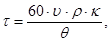
где время заливки, с;
изолируемый объем, м3;
кажущаяся плотность пенополиуретана в изделии, кг/м3;
коэффициент потерь (потери летучих и потери полиуретановой смеси, оставшейся на стенках смесительной камеры. Устанавливается путем многократных заливок. В большинстве случаев 1,05-1,1);
установленная производительность заливочной машины, кг/мин.
6.21. В зависимости от вида изолируемого объекта и толщины наносимой изоляции объем пенопласта, получаемый за одноразовую заливку, должен быть не более 0,15 м3.
6.22. После каждой заливки камера смесительной головки машины должна промываться 5-10 %-ным раствором диоктилфталата в хлористом метилене, который сливается в тару разового пользования (бумажный или полиэтиленовый мешок). Допускается промывка смесительной камеры после 3-5 дозировочных "вспрысков", если интервал между ними не превышает 5-7 с.
6.23. При наличии горизонтальных и вертикальных участков трубопроводов в первую очередь должна производиться заливка горизонтальных участков.
6.24. При толщине изоляции до 120 мм время выдержки (интервал между послойными заливками) должно быть не менее 4-5 мин. При толщине изоляции свыше 120 мм интервал между послойными заливками должен составлять 7-10 мин.
7.1. Контроль производства осуществляется на всех стадиях технологического процесса выполнения изоляции. Основные контролируемые показатели приведены в табл. 3.
Таблица 3
|
Наименование стадии процесса |
Что контролируется |
Частота и способ контроля |
Норма и технические показатели |
Метод контроля |
Ответственный за контроль |
|
Приготовление компонента А |
Качество исходного сырья |
Каждая партия. Наличие технических паспортов, соблюдение сроков хранения |
Соответствие данных паспортов нормативной документации. Нормы технологической пробы |
Технологическая проба при отрицательных результатах проверки сырья по нормативной документации |
Лаборатория |
|
Температура исходных компонентов и их подогрева |
Постоянно перед дозированием |
Согласно принятому режиму по данной инструкции |
Термометром с пределом
измерения 0-50 °С или |
Аппаратчик |
|
|
Количество загружаемого сырья |
Постоянно с записью в журнале |
Согласно рецептуре |
Взвешивание, точность дозирования 1-2 % |
Старший аппаратчик |
|
|
Качество смешивания и готовность компонента А |
Через 2 ч и далее после добавки хладона-II; отбор проб |
Отсутствие видимых расслоений. Нормы технологической пробы |
Визуально, технологическая проба |
Лаборатория, аппаратчик |
|
|
Подготовка компонента Б |
Качество сырья |
Каждая партия. Определение наличия технического паспорта, соблюдение сроков хранения |
Соответствие данных паспорта ТУ. Нормы технологической пробы. Отсутствие осадка |
Технологическая проба. При отрицательном результате проверка по техническим условиям. Визуально |
Лаборатория. |
|
Подготовка заливочной машины |
Производительность машины по каждому компоненту, соотношение компонентов |
Один раз в смену |
Время заливки должно быть не более 20-60 с А:Б = 1:1,03-1,2 |
По реле времени (секундомеру), взвешивание каждой дозы компонентов |
Старший аппаратчик |
|
Параметры вспенивания, кажущаяся плотность и качество пенопласта |
Один раз в смену, а также после длительного перерыва в работе и при переработке новой партии сырья |
Временные параметры вспенивания равны или на 20-25 % ниже показателей лабораторной технологической пробы. Равномерная структура пенопласта, кажущаяся плотность, 45±5 кг/м3 |
С помощью секундомера. Визуальное наблюдение. Резка образца, измерение его размеров и массы |
Лаборатория, старший аппаратчик |
|
|
Подготовка изолируемых объектов |
Правильность сборки защитного покрытия |
Каждый объект |
Отклонение от толщины изоляции ± 5 % |
Измерение расстояния между изолируемой поверхностью и покрытием |
|
|
Проверка герметичности оболочек |
То же |
Отсутствие неплотностей в местах соединений листов оболочки |
Визуально |
Аппаратчик |
|
|
Наличие заливочных и контрольных отверстий |
-"- |
Наличие отверстий |
-"- |
-"- |
|
|
Заливка пенополиуретана |
Качество пенопласта, параметры вспенивания |
1-2 раза в смену, а также при использовании различных партий сырья |
Равномерная структура пенопласта, плотность 45±5 кг/м3 |
Визуально. Технологическая проба. Определение параметров вспенивания. Резка образца, измерение размеров и массы |
Лаборатория, старший аппаратчик |
|
Полное заполнение изолируемого объема |
Постоянно при заливке |
Отсутствие пустот глубиной более 10 мм |
Визуально по заполнению отверстий, простукиванием |
Аппаратчик. |
8.1. Основные виды брака, их причины и способы устранения приведены в табл. 4.
Таблица 4
|
Вид брака |
Причина брака |
Меры по устранению брака |
|
Вскипание пены |
Уменьшилась или отсутствует подача одного из компонентов; не работает насос или электродвигатель; засорился один из фильтров; нарушилась подача воздуха в смесительную головку |
Проверить дозировку; исправить насос или электродвигатель; прочистить фильтр; отрегулировать подачу воздуха в смесительную головку |
|
Нарушен состав рецептуры |
Проверить рецептуру путем технологической пробы |
|
|
Плохое смешивание |
Проверить число оборотов мешалки в смесительной головке, подачу воздуха |
|
|
Образование пузырей, трещин в поверхностном слое |
Нарушен состав рецептуры |
Проверить рецептуру путем технологической пробы |
|
Не обеспечен температурный режим технологии заливки |
Проверить температуру компонентов |
|
|
Истек срок хранения компонентов |
Проверить рецептуру путем технологической пробы |
|
|
Неполное заполнение изолируемого объема (недооформление) |
Не обеспечено необходимое количество полиуретановой смеси |
Проверить количество полиуретановой смеси, подаваемой в изолируемый объем |
|
Не соблюдается температурный режим получения пенопласта |
Проверить температурный режим получения пенопласта |
|
|
Нарушен состав рецептуры, нарушено соотношение компонентов А и Б |
Проверить по технологической пробе качество композиции |
|
|
Истек срок хранения компонентов |
Проверить компоненты по техническим условиям, а рецептуру по технологической пробе |
|
|
Пенопласт крупнопористый с темными разводами |
Недостаточное смешивание компонентов А и Б |
Проверить число оборотов мешалки в смесительной головке, подачу воздуха |
|
Поступает большой избыток компонента Б |
Проверить дозировку |
|
|
Истек срок хранения компонентов |
Проверить рецептуру по технологической пробе |
Примечание: проверка рецептуры путем технологической пробы должна производиться по п.п. 6.15, 6.18, 6.19 настоящей инструкции.
9.1. Работы по нанесению тепловой изоляции заливочными пенопластами в условиях монтажа необходимо выполнять с соблюдением правил техники безопасности, пожарной безопасности, санитарных норм и других нормативных документов, в том числе:
СНиП III-20-74 "Правила производства и приемки работ";
ССБТ, ГОСТ 12.3.038-85 "Строительство. Работы по тепловой изоляции оборудования и трубопроводов. Требования безопасности";
"Санитарные правила организации работы по напылению жесткого пенополиуретана", утвержденные Минздравом СССР (М., 1974);
ССБТ, ГОСТ 12.0.002-80, ГОСТ 12.0.004-79, ГОСТ 12.1.004-76, ГОСТ 12.1.007-76, ГОСТ 12.1.010-76, ГОСТ 12.2.012-75.
9.2. К работе по изготовлению пенополиуретана для тепловой изоляции допускаются лица, прошедшие инструктаж и проверку знаний по безопасным методам работы непосредственно на рабочем месте с последующим оформлением в личной карточке инструктажа, сдавшие экзамен и имеющие удостоверение на допуск к самостоятельной работе.
Лица, имеющие заболевания дыхательных путей и сердца, к работе по заливке пенополиуретана не допускаются.
9.3. Все работы по тепловой изоляции из пенополиуретана проводятся в спецодежде с применением индивидуальных средств защиты:
костюм хлопчатобумажный, ГОСТ 12548-76 и ГОСТ 9282-76;
ботинки кожаные, ГОСТ 5394-74;
защитные очки, ГОСТ 12.4.03-80;
перчатки резиновые, ТУ 38-106140-81;
рукавицы хлопчатобумажные, ГОСТ 12.4.010-75.
Для рабочих, занятых непосредственно подготовкой сырья и изготовлением пенополиуретана, должна быть обеспечена еженедельная смена и стирка спецодежды.
9.4. Рабочие, изготовляющие пенополиуретан, также должны иметь при себе противогаз марки БКФ (ТУ 6-15-1976-75) или респиратор РУ-60М (ГОСТ 17269-71).
9.5. На каждую операцию технологического процесса должны быть составлены инструкции по техническому обслуживанию оборудования и инструкция по технике безопасности, отражающие специфические особенности каждой операции наиболее опасные моменты в работе.
9.6. При производстве пенополиуретана опасными операциями по образованию и выделению в воздух рабочей зоны вредных веществ являются:
подготовка полиизоцианата (п.п. 6.11-6.13 данной конструкции);
подготовка компонента А (п.п. 6.2; 6.3; 6.5; 6.8-6.10);
заполнение емкостей заливочной машины компонентами и промывочной жидкостью;
заливка и вспенивание пенополиуретана.
9.7. Во избежание несчастных случаев необходимо:
строго соблюдать технологический режим процесса;
соблюдать инструкцию по технике безопасности, промсанитарии и пожарной безопасности участка;
внимательно следить за герметичностью аппаратов и коммуникаций, не допускать разлива химических веществ;
работать только в спецодежде и обязательно использовать средства защиты;
иметь вблизи рабочего места средства для дегазации применяемых химических веществ (5-10 %-ный раствор аммиака, 5 %-ный раствор соляной кислоты), а также аптечку с необходимыми медикаментами, в которой дополнительно должны быть 1,3 %-ный раствор поваренной соли, 5 %-ный раствор борной кислоты, этиловый спирт, 2 %-ный раствор питьевой соды;
уметь оказать первую доврачебную помощь при поражении электрическим током (искусственное дыхание, массаж сердца);
регулярно проверять исправность оборудования и КИП;
следить за исправностью и наличием систем заземления;
применять меры по защите от статического электричества;
не начинать работу без ограждения движущихся частей оборудования.
9.8. В местах хранения и приготовления рабочих смесей и на участках заливки пенополиуретана запрещено производить электро- и газосварочные работы, разводить огонь, курить или вести работы, вызывающие образование искр.
9.9. В случае выполнения работ в закрытых помещениях последние должны быть оборудованы принудительной приточно-вытяжной вентиляцией, обеспечивающей удаление вредных веществ от мест их выделения. Концентрация вредных веществ в рабочей зоне не должна превышать соответствующей ПДК или ОБУВ.
9.10. Работу с полиизоцианатами необходимо проводить в спецодежде, резиновых перчатках, защитных очках и при наличии противогаза марки "БКФ".
9.11. В случае разлива полиизоцианата необходимо немедленно засыпать его сухим песком или опилками, нейтрализовать 5-10 %-ным раствором аммиака (выдержать не менее 2 ч), затем собрать и закопать в землю. Сжигание опилок с полиизоцианатом запрещается.
9.12. При попадании полиизоцианата на кожу пораженное место необходимо протереть тампоном, смоченным в этиловом спирте, и тщательно промыть водой. При поражении больших участков кожного покрова необходимо принять теплый душ с мылом и обратиться в медпункт.
9.13. При попадании брызг полиизоцианата в глаза необходимо промыть их 1,3 %-ным раствором поваренной соли; при попадании в рот - тщательно прополоскать рот водой и обратиться в медпункт.
9.14. При загрязнении одежды полиизоцианатом необходимо немедленно снять ее, удалить из помещения и подвергнуть загрязненные части дегазации и стирке. Дегазация проводится 5-10 %-ным раствором аммиака (выдерживают в течение суток) с последующей стиркой в мыльной воде и прополаскиванием в чистой воде.
9.15. Хранят полиизоцианат в специально отведенном месте в герметичной таре. При хранении в бочках последние должны находиться в лежачем положении пробками кверху на расстоянии не менее 1 м от отопительных приборов и должны быть защищены от прямого попадания солнечных лучей.
9.16. При приготовлении компонента А необходимо избегать попадания полиэфира на кожу (работать в резиновых перчатках).
9.17. При попадании полиэфиров на кожу смыть сильной струей воды.
9.18. При попадании полиэфиров в глаза промыть глаза 1,3 %-ным раствором поваренной соли, а затем чистой водой.
9.19. Хранят полиэфиры в специальных помещениях при температуре не выше 30 °С.
9.20. Хладон-II хранят в соответствии с правилами Госгортехнадзора СССР в таре согласно ТУ 6-02-727-78, которая при температуре выше 24 ° представляет опасность как сосуды, находящиеся под избыточным давлением.
9.21. Обслуживающий персонал при работе с хладоном-II, а также при промывке и обработке аппаратуры и тары из-под него, должен быть обеспечен спецодеждой, защитными очками и резиновыми перчатками.
9.22. При попадании хладона-II в глаза их нужно промыть струей чистой воды (нельзя забинтовывать и накладывать на них повязку) и обратиться в медпункт. При раздражении слизистых оболочек хладоном-II следует полоскать горло и промывать нос 2 %-ным раствором питьевой соды.
9.23. При отравлении хладоном применяется первая медицинская помощь, обычная в случаях удушья (кислород, кофе, искусственное дыхание).
9.24. Все работы с хлористым метиленом, диметилэтаноламином должны проводиться в спецодежде. Дозировку диметилэтаноламина необходимо осуществлять с применением респираторов РУ-60M.
9.25. Работающие с хлористым метиленом и диметилэтаноламином должны иметь при себе промышленные противогазы по ТУ 6-16-1976-75 марки "БКФ".
9.26. При попадании диметилэтаноламина на кожу необходимо смыть его водой, затем протереть ватным тампоном, смоченным 5 %-ным раствором борной кислоты, снова промыть водой с мылом, а затем чистой водой.
При попадании диметилэтаноламина в глаза следует промыть их водой, протереть ватным тампоном, смоченным 5 %-ным раствором борной кислоты, промыть снова водой и обратится в медпункт.
9.27. В случае разлива диметилэтаноламина и создания повышенной загазованности во избежание несчастных случаев следует немедленно надеть противогаз марки "БКФ" и произвести дегазацию диметилэтаноламина 5 %-ным раствором соляной кислоты. При pазливе хлористого метилена его убирают, посыпая место разлива песком.
9.28. Хранение сырья для производства пенополиуретана должно производиться в несгораемой закрытой таре в количестве не более 5 суточной потребности. Ограждающие конструкции помещений для хранения должны быть выполнены из несгораемых материалов.
9.29. При работе с хлористым метиленом не допускать воздействие открытого пламени, так как хлористый метилен в этих условиях разлагается с выделением хлористого водорода и фосгена.
9.30. Отходы производства пенополиуретана следует уничтожать путем зарывания их в землю на свалке на глубину 2 м. Крупные куски пенопластов желательно предварительно измельчить.
9.31. Допускается сжигание отходов в печах, снабженных устройствами для улавливания вредных газов (СО, СН4, СНN, HCl и т.д.), образующихся при горении.
рекомендуемое
КОНСТРУКЦИЯ ДИСТАНЦИОННЫХ ОПОР И ДЕРЖАТЕЛЕЙ
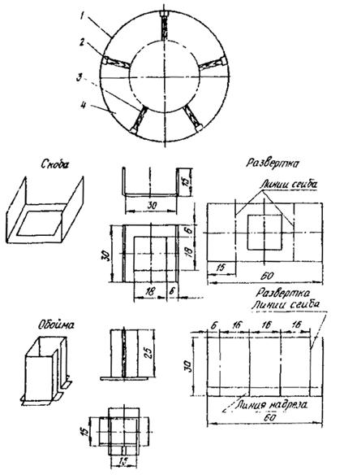
1 - металлическая лента размерами 1,5х30 мм; 2 - держатель; 3 - деревянная стойка размерами 15х15 мм; 4 – крепление ленты
рекомендуемое
КОНСТРУКЦИЯ ТЕПЛОВОЙ ИЗОЛЯЦИИ ПРЯМОЛИНЕЙНЫХ УЧАСТКОВ ТРУБОПРОВОДОВ
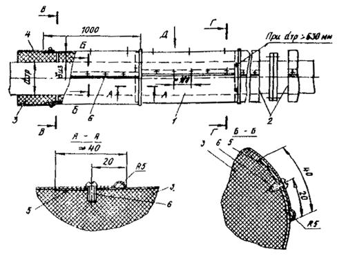
Г-Г В-В
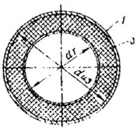
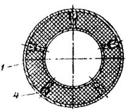
1 - элемент покрытия; 2 - отделка торцов; 3 - теплоизоляционный слой; 4 - дистанционная опора; 5 - герметик; 6 - винт 4х12.46.019 (ГОСТ 10621-80)
Вид Д
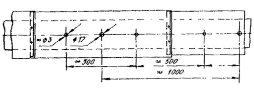
Расположение отверстий для залива ППУ и контроля выхода газов
рекомендуемое
КОНСТРУКЦИЯ ТЕПЛОВОЙ ИЗОЛЯЦИИ ФЛАНЦЕВЫХ СОЕДИНЕНИЙ ТРУБОПРОВОДОВ
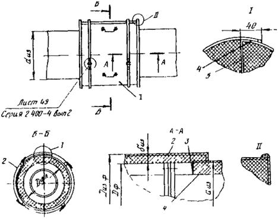
1 - правый полуфутляр с теплоизоляционным слоем; 2 - левый полуфутляр с теплоизоляционным слоем; 3 - отделка торцов изоляции; 4 - герметик, 5 - уплотнительный слой (резина)
рекомендуемое
КОНСТРУКЦИЯ ТЕПЛОВОЙ ИЗОЛЯЦИИ ОТВОДОВ ТРУБОПРОВОДОВ
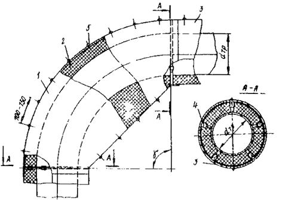
Тип I: 1 - правый и левый полуфутляры; 2 - теплоизоляционный слой; 3 - элемент покрытия; 4 - дистанционная опора; 5 - винт 4х12.46.019 (ГОСТ 10621-80)
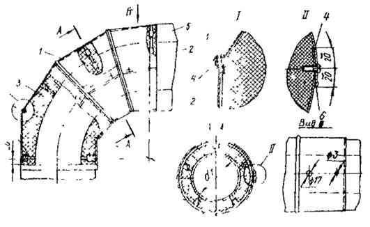
Тип II: 1 – средняя секция; 2 – крайняя секция; 3 – теплоизоляционный слой; 4 – герметик; 5 – дистанционная опора; 6 – винт 4х12.019 (ГОСТ 10621-80)
рекомендуемое
КОНСТРУКЦИЯ ТЕПЛОВОЙ ИЗОЛЯЦИИ, МЕСТ ВРЕЗОК И АРМАТУРЫ ТРУБОПРОВОДОВ
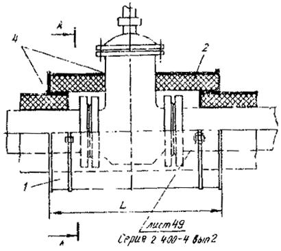
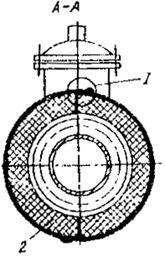
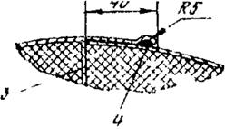
1 - правый полуфутляр с теплоизоляционным слоем; 2 - левый полуфутляр с теплоизоляционным слоем; 3 – уплотнительный слой (резина); 4 - герметик
рекомендуемое
КОНСТРУКЦИЯ ТЕПЛОВОЙ ИЗОЛЯЦИИ ЦИЛИНДРИЧЕСКИХ ЧАСТЕЙ ОБОРУДОВАНИЯ И AППАРАТОВ
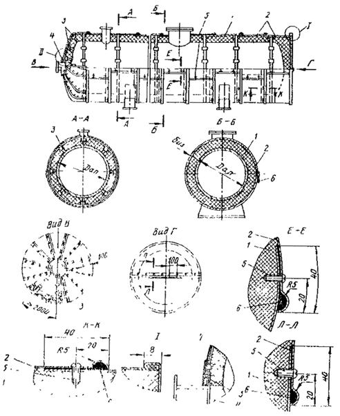
1 - теплоизоляционный слой; 2 - покровный слой; 3 - дистанционная опора; 4 - кольцо; 5 - винт 4´12.46.019 (ГОСТ 10621-80); 5 – герметик
рекомендуемое
КОНСТРУКЦИЯ ТЕПЛОВОЙ ИЗОЛЯЦИИ СФЕРИЧЕСКИХ ЧАСТЕЙ ОБОРУДОВАНИЯ И АППАРАТОВ
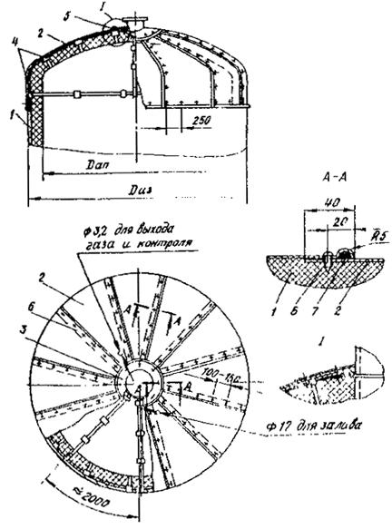
1 - теплоизоляционный слой; 2 - сектор покрытия; 3 - накладка; 4 - дистанционная опора; 5 - кольцо; 6 - винт 4х12.46.019 (ГОСТ 10621-80); 7 - герметик
справочное
ХАРАКТЕРИСТИКА И
ОСНОВНЫЕ СВОЙСТВА СЫРЬЯ
ДЛЯ ИЗГОТОВЛЕНИЯ ППУ-331
1. Компонент A2-331 (ТУ 6-05-221-800-85) - смесь простых полиэфиров с глицерином, этиленгликолем, огнегасящей добавкой, эмульгатором и водой. Внешний вид: вязкая мутноватая жидкость от светло-желтого до коричневого цвета. Вязкость при 20 °С - не более 1 Па·с (1000 сП). Гидроксильное число 412,5-478,5 МгКОН/г, массовая доля воды 1,3-1,5 %.
Токсикологические свойства: относится к 3 классу опасности (ГОСТ 12.1-007-76).
Показатели пожароопасности: горюч, невзрывоопасен. Температура вспышки (открытый тигель) 167±2 °С, температура воспламенения 178±2 °С.
2. Лапрол-805 (ТУ 6-05-1679-74) - простой полиэфир с молекулярной массой 800, получаемый полимеризацией окиси пропилена с ксилитом. Внешний вид: прозрачная жидкость от бесцветной до слабо-желтой окраски. Плотность 1060 кг/м3 при 20 °С. Вязкость по Хеплеру при 25 °С 2,5-4 Па×с (2500-4000 сП). Содержание гидроксильных групп 10-11,5 %, рН=5-7,8. Растворяется в воде и органических растворителях.
Токсикологические свойства: нелетучая, маслообразная жидкость. Относится к малотоксичным веществам 4 класса опасности. При длительном воздействии на кожные покровы способен вызвать поражения печени и почек. Кумулятивными свойствами практически не обладает. При работе с лапролом-805 следует соблюдать обычные меры предосторожности.
Показатели пожароопасности: горючая жидкость. Температура вспышки 204 °С, воспламенения 244 °С.
3. Лапрамол-294 (ТУ 6-05-1681-80) - простой полиэфир о молекулярной массой 290, получаемый взаимодействием окиси пропилена с водным раствором этилендиамина. Внешний вид: прозрачная густовязкая жидкость от бесцветной до слабо-желтой окраски. Плотность 1037 кг/м3 при 20 °С. Содержание гидроксильных групп 20,5-23 %. Содержание азота 9,1-10 %, pH=10,7-11,5. Вязкость по Хеплеpy при 25 °С в пределах 40-50 Па×с (40000-50000 сП). Растворяется в воде и органических растворителях.
При длительном хранении может кристаллизоваться с образованием белой кашеобразной массы, которая легко переводится в жидкое состояние нагреванием до 50 °С.
Токсикологические свойства: умеренно токсичное вещество, относится к 3 классу опасности (ГОСТ 12.1.007-76). Обладает выраженным гепатотропным действием, вызывает некоторое поражение легочной ткани. Всасывается через неповрежденную кожу. Не летуч.
Показатели пожароопасности: горит. Температура вспышки 235 °С. Температура воспламенения 275 °С.
Лапрол-805 и лапрамол-294 являются основными полиольными компонентами рецептуры, создающими при реакции с полиизоцианатом полимерную основу пенополиуретана. Лапрамол-294 одновременно катализирует реакцию.
4. Глицерин синтетический, сорт I (ОСТ 6-01-21-75) - трехатомный спирт с молекулярной массой 92,09. Внешний вид: прозрачная сиропообразная жидкость от бесцветной до слабо-желтой окраски, без запаха. Плотность 1260 кг/м3. Чистый глицерин кипит при 290 °С. Температура кипения 99 %-ного водного раствора 239 °С. Глицерин во всех соотношениях смешивается с водой, спиртом, ацетоном. Гигроскопичен.
Токсикологические свойства: относится к физиологически безвредным веществам 4 класса опасности. Не летуч.
Показатели пожароопасности: горючая жидкость. Температура воспламенения 203 °С, самовоспламенения 362 °С. Температура вспышки в закрытом тигле 198 °С. Пределы взрываемости в смеси с воздухом 2,6¸11,3 % объемных. Термически неустойчив при длительном нагреве (даже до 90-130 °С). Разлагается с образованием легковоспламеняющихся жидкостей, понижающих температуру вспышки до 112 °С.
5. Этиленгликоль, сорт 1 (ГОСТ 1971O-74) - диол с молекулярной массой 62,07. Внешний вид: сиропообразная бесцветная прозрачная жидкость. Плотность 1113 кг/м3. Гигроскопичен. Смешивается во всех соотношениях с водой и спиртом.
Токсикологические свойства: обладает наркотическими свойствами и при попадании внутрь организма может вызвать острые и хронические отравления с поражением жизненно важных органов и систем. Не летуч.
Показатели пожароопасности: горючая жидкость. Температура вспышки 120 °С, температура самовоспламенения 380 °С. Температурные пределы воспламенения: нижний - 112 °С, верхний - 124 °С. При загорании для тушения применять тонкораспыленную воду и пену, а также инертные газы.
Глицерин и этиленгликоль участвуют в реакции с полиизоцианатом.
6. Пенорегулятор КЭП-2 (ТУ 6-02-813-73) - неионогенное поверхностно-активное вещество, представляющее собой гидролитически устойчивый оксиал-киленорганосилоксановый блоксополимер.
Внешний вид: прозрачная жидкость от желтого до коричневого цвета. Растворяется в воде, рН водного раствора 6,0-8,0. Плотность 1030-1040 кг/м3.
Токсикологические свойства: пенорегулятор КЭП-2 в условиях применения не выделяет в воздух рабочей зоны химических токсичных веществ. Не вызывает раздражения со стороны слизистой оболочки глаз, неповрежденной кожи, а также является практически нетоксичным при многократном введении в желудок. Применение пенорегулятора не требует специальных мер индивидуальной защиты (противогаза, респиратора, очков, перчаток).
Показатели пожароопасности: температура вспышки 230 °С, температура самовоспламенения 260 °С. Взрывоопасен.
Гидролитическая устойчивость КЭП-2 позволяет использовать его при получении пенополиуретана для изготовления конфекционированных смесей, содержащих воду.
7. Трихлорэтилфосфат (ТУ 6-05-611-78) - полный эфир ортофосфорной кислоты и этиленхлоргидрина с молекулярной массой 285,49. Внешний вид: низковязкая прозрачная маслянистая жидкость. Плотность при 20 °С 1420-1425 кг/м3. Показатель преломления при 20 °С 1,472-1,474. Содержание влаги не более 0,09 %. Температура кипения 208-220 °С.
Токсикологические свойства: нелетучая жидкость. Проникает через неповрежденную кожу, оказывая раздражающее действие и в условиях хронического воздействия способен вызывать симптомы интоксикации. При попадания на слизистую оболочку глаза вызывает нестойкий конъюнктивит. Относится к 2 классу опасности (ГОСТ 12.1.007-76). ПДК - 0,5 мг/м3 (ГОСТ 12.1.005-76).
Показатели пожароопасности: негорюч, невзрывоопасен. Температура вспышки не менее 225 °С. Температура воспламенения более 190 °С. Температура самовоспламенения не менее 602 °С.
Трихлорэтилфосфат является нереакционной фосфорхлорсодержащей добавкой, служит для снижения горючести пенополиуретана.
8. Трихлорпропилфосфат (ТХПФ) по ТУ 6-05-211-876-79 - полный эфир ортофосфорной кислоты и β-хлорпропилового спирта с молекулярной массой 327,56. Внешний вид: маслянистая прозрачная жидкость. Плотность при 20 °С 1280-1290 кг/м3.
Токсикологические свойства: малолетучая жидкость. По характеру действия на организм относится к умеренно токсичным соединениям. Ориентировочный безопасный уровень воздействия для трихлорпропилфосфата составляет 1,5 мг/м3. ТХПФ оказывает при однократном и повторном воздействия слабое раздражающее действие на кожу и слизистую оболочку. Температура кипения 160-170 °C при 0,266·10-3 МПa(2 мм.рт.ст.), температура вспышки 185 °С.
Трихлорпропилфосфат может применяться в рецептуре пенополиуретана ППУ-331 взамен трихлорэтилфосфата.
9. Диметилэтаноламин технический (ТУ 6-02-1066-77) - прозрачная бесцветная или слабо-желтая маслянистая жидкость с характерным аминным запахом. Молекулярная масса 89,138. Плотность 887-889 кг/м3 при 20 °С. Температура кипения 134-135 °С.
Токсикологические свойства: умеренно токсичное вещество, относится к 3 классу опасности. Оказывает раздражавшее действие на слизистую оболочку дыхательных путей и глаз. При попадании на кожу вызывает дерматиты. ПДК диметилэтаноламина в воздухе рабочей зоны составляет 5 мг/м3.
Показатели пожароопасности: легковоспламеняющаяся жидкость. Температура вспышки 38 °С. Температурные пределы воспламенения: нижний - 35 °С, верхний - 83 °С.
Диметилэтаноламин применяется в рецептуре в качестве катализатора. Вследствие наличия гидроксильных групп химически связывается при образовании пенополиуретана.
10. Хладон-II (фтортрихлорметан) по ТУ 6-02-727-78 - легкокипящая прозрачная жидкость со слабым запахом четыреххлористого углерода. Температура кипения 23,77 °С при 0,1 МПа (760 мм.рт.ст.). Плотность продукта при температуре 0 °С - 1541; 10 °С - 1511; 20 °С - 1498; 30 °С - 1475 кг/м3.
Токсикологические свойства: при нормальных температурах стабильное малотоксичное вещество; при высоких температурах может разлагаться с образованием высокотоксичных продуктов. По биологическому действию является наркотиком. При попадании на кожу и слизистые оболочки хладон-II может вызывать воспалительную реакцию и конъюнктивит. ПДК в воздухе рабочей зоны составляет 1000 мг/м3 согласно ТУ 6-02-727-78. Относится к 4 классу опасности.
Показатели пожаро- и взрывоопасности: негорюч и невзрывоопасен. Емкости, наполненные хладоном-II, при температуре выше 24 °С представляют собой опасность как сосуды, находящиеся под избыточным давлением.
При получении пенополиуретана хладон-II используется в качестве агента физического вспенивания, образующего газовую фазу под действием тепла протекающих экзотермических реакций.
11. Вода (ГОСТ 6709-72), входящая в рецептуру, реагирует с полиизоцианатом с выделением углекислого газа, который служит химическим вспенивателем при получении пенополиуретана.
12. Компонент Б - полиизоцианат (ТУ 6-03-375-75) марки Б, сорт высший - смесь дифенилметандиизоцианатов большой молекулярной массы. Внешний вид: темная жидкость со специфическим запахом. Содержание дифенилметандиизоцианата 50-60 %. Содержание изоцианатных групп не менее 30 %. Плотность при 20 °С 1220-1250 кг/м3. Упругость паров при 20 °С ниже 0,133·10-6 МПа (10-3 мм.рт.ст). При температуре ниже +10 °С кристаллизуется. Разлагается под действием влаги с выделением углекислого газа.
Токсикологические свойства: является высокоопасным веществом, ПДК -0,2 мг/м3, ОБУВ - 1 мг/м3. По степени воздействия на организм относится к веществам 2 класса опасности. Полиизоцианат обладает общетоксичным действием и способен вызвать нарушение деятельности сердечно-сосудистой и центральной нервной систем. Является также сенсибилизатором и аллергеном. Пары полиизоцианата вызывают раздражение слизистых оболочек и верхних дыхательных путей. При остром отравлении - бронхопневмонию, жалобы на головную боль и в области сердца.
Показатели пожароопасности: горит. Температура вспышки 185 °С, температура воспламенения 215 °С. Продукты горения могут содержать токсичные вещества. При тушении обязательно применение кислородно-изолирующей аппаратуры.
Полиизоцианат является одним из основных компонентов рецептуры, реагирующим в присутствии добавок с гидроксилсодержащими продуктами (лапролом-805, лапрамолом-294, глицерином, этиленгликолем) и водой с образованием пенополиуретана.
13. Хлористый метилен (метиленхлорид) по ГОСТ 9968-73 - продукт, получаемый хлорированием метана. Внешний вид: бесцветная прозрачная жидкость. Температура кипения +42 °C. Плотность 1324-1329 кг/м3.
Токсикологические свойства: наркотик, обладающий выраженной токсичностью. может вызвать как острое отравление, так и хроническую интоксикацию. Симптомы острого отравления: головная боль, головокружение, затемнение сознания, рвота, раздражение дыхательных путей, конъюнктивит. Все симптомы постепенно исчезают после прекращения работы с метиленхлоридом. Относится к веществам 4 класса опасности, ПДК - 50 мг/м3.
Показатели пожароопасности; является трудногорючей жидкостью. Температура самовоспламенения нестабилизированного хлористого метилена 580 °С. Невзрывоопасен в смеси с воздухом. Взрывоопасен с чистым кислородом в пределах концентраций 15,5-66 %; объемных.
14. Диоктилфталат (ГОСТ 8728-77) - сложный эфир 2-этилгексилового спирта и ортофталевой кислоты. Внешний вид: прозрачная маслянистая жидкость со слабым специфическим запахом. Температуре кипения +340 °С. Плотность при 20 °С 982 кг/м3. Нерастворим в воде.
Токсикологические свойства: относится к веществам 3 класса опасности, ПДК - 1,0 мг/м3.
Показатели пожароопасности: горюч, температуре вспышки не менее 203 °С.
рекомендуемое
ЗАВИСИМОСТЬ КОЛИЧЕСТВА КАТАЛИЗАТОРА (ДМЭА) В КОМПОНЕНТЕ A ОТ ТЕМПЕРАТУРЫ ОКРУЖАЮЩЕЙ СРЕДЫ
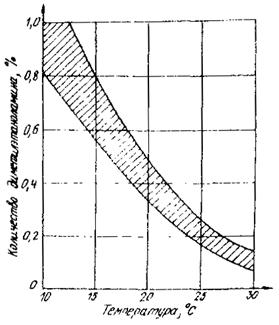